Silvassa
Capital city known for its scenic beauty and tribal culture
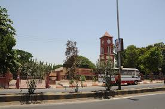
Capital city known for its scenic beauty and tribal culture

Lake garden with boating facilities and lush greenery
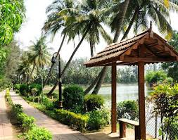
Museum showcasing the tribal heritage and artifacts of the region
Historic Portuguese fort with views of the Arabian Sea
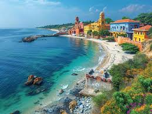
Beach known for its rocky shores and sunset views
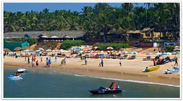
Beach with serene surroundings and water sports activities
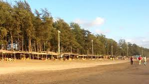
Historic fort overlooking the Arabian Sea

Naturally formed caves with intricate rock formations
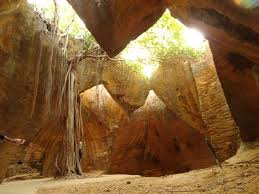
Temple with five Shiva lingas washed by the sea waves
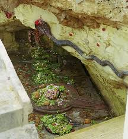
Scenic beach in Dadra and Nagar Haveli
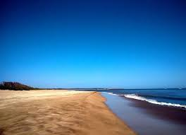
Fort with historic significance in Daman
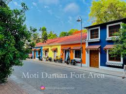
Annual cultural and music festival held in Diu celebrating local culture and arts
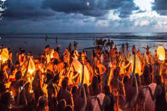
Opportunities for water sports such as jet skiing, parasailing, and banana boat rides at various beaches
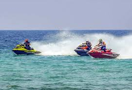
Explore the natural beauty and wildlife sanctuaries in Dadra and Nagar Haveli
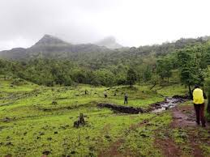